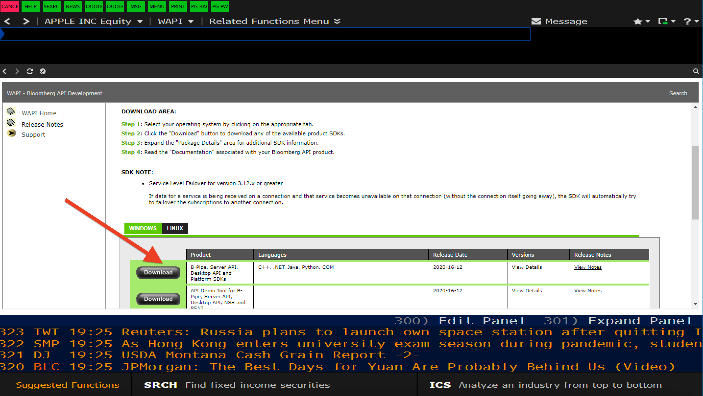

Informs Knowledge Cafe' (Spring 2021)
Tutorial-Data Collection
The University of Iowa Student INFORMS holds an informal gathering known as Knowledge Café in which people share their knowledge and expertise.
Anyone interested in learning from other researchers is welcomed. More about the University of Iowa Student INFORMS can be found here!
In this Knowledge Café, we are going to learn how to collect data from databases by using Application Programming Interface (API)
provided by databases. We mainly focus on Wharton Research Data Services (WRDS) and Bloomberg terminal using Python API.
1. WRDS
Setup
The installation is fairly easy. You need to create account or register here. For more information, you may ask Kim Bloedel, the head of Pomerantz Business Library.
Install the WRDS Python Module by running the following command in your Anaconda Terminal.
pip install wrdsData Collection from WRDS
import the WRDS Python Module
import wrdsdb = wrds.Connection(wrds_username='your-username')
Find your library and tables. They can be found in the "Variable Description" of interested libraries, see the following picture:
 Or, another method for discovering what tables are included inside a libraries, you can run the
Or, another method for discovering what tables are included inside a libraries, you can run the db.list_tables(library="intersted library").For example, in the follwing picture, I am going to find out what tables are included in the library of
'comp':
 The following command describes the variables of table
The following command describes the variables of table 'wrds_seg_customer'
 Now, let's say we are going to collect 'company name', 'gvkey' and 'sales to cutomers' from the table
Now, let's say we are going to collect 'company name', 'gvkey' and 'sales to cutomers' from the table 'wrds_seg_customer' and the library 'comp'
Sometimes, it is just helpful to collect the required data. Let's say, we have a database taht shows companies and whether thay have twitter account or not. Now, we are going to collect their 'sales', 'company name', and 'cusip' of these companies.
Now, we are going to collect their 'sales', 'company name', and 'cusip' of these companies. First, we need to create a dictionary of tickers with the following format: Once, we create that dictionary, we submit the job to wrds for colleccting those variables only for these companies and only from January of 2010 till January of 2020. See the following picture:
 Once the data is collected, we may again merge two dataframes:
So, this process can be applied to any other databases, the only thing you need to change is your wrds library and table.
Once the data is collected, we may again merge two dataframes:
So, this process can be applied to any other databases, the only thing you need to change is your wrds library and table.
2. Bloobmerg
Two python APIs are available:2.1. Installation
2.1.1. pdblp
I personally do not recommend this API since I did not find it very user-friendly compared to the Xbbg (next one that I am using). But you can find installation and documentation in the following links:
2.1.2. xbbg
You can find the installation and documetationpip install xbbg
pconda install -c conda-forge blpapi
blpapi3_32.dll,etcNext, download the file. I am using Windows, so I download the file which is compatible with windows.
 Once you downloaded the file, you need to copyblpapi3_32.dll and blpapi3_64.dll under bin folder to Bloomberg BLPAPI_ROOT folder, normally blp/DAPI.
2.2. Data Collection from Bloomberg by using xbbg
blp.bdh('tickers', field,override,start_date='YYYY-MM-DD', end_date='YYYY-MM-DD') . 'tickers': This is where you put tickers. Notice that tickers format in WRDS are differnt than Bloomberg. For example, the ticker of Ford motors Co. in Bloomberg is 'F US Equity' but it 'F' in WRDS.
See the following figure which shows revenue of Ford motors Co. from 2019-01-01 till 2020-12-30
blp.bdp(tickers,fields)
Likewise, we can send a list of tickers for collecting historical or non-historical data: